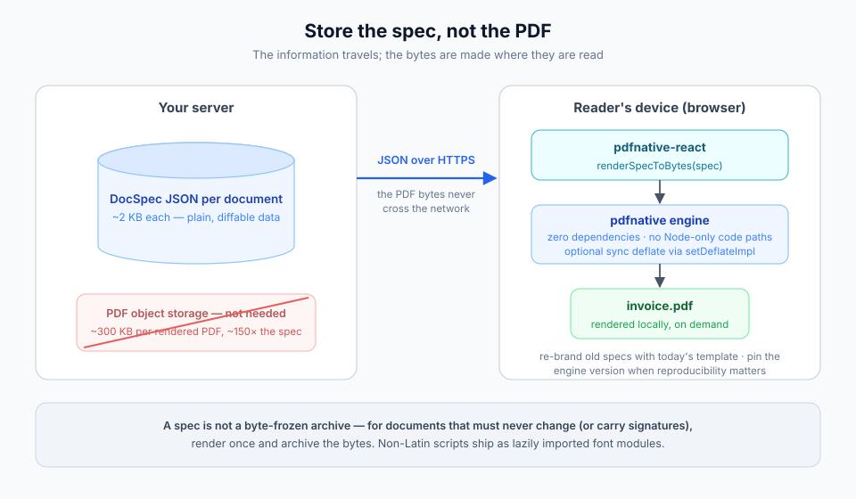
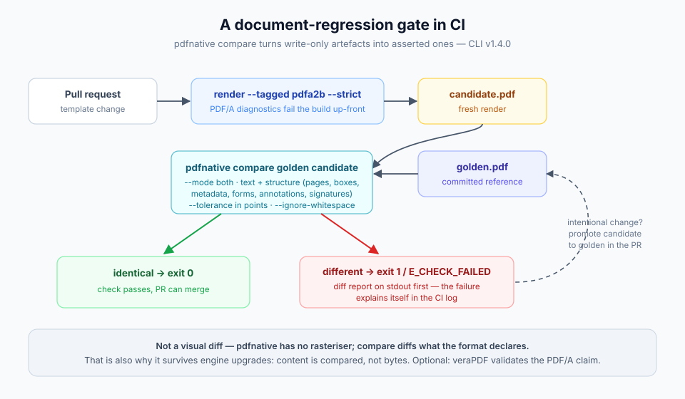
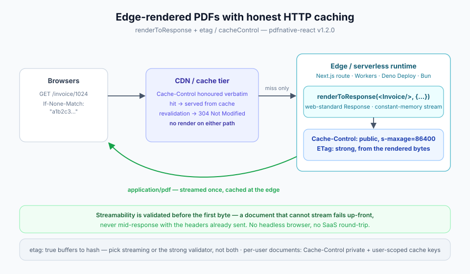

Ecosystem use cases
Four production architectures, each built from parts the ecosystem already ships. Store a kilobyte of JSON instead of a megabyte of PDF and render on the reader's own device; sign to PAdES B-LTA across an air gap; gate template changes in CI with a real document diff; and serve edge-rendered PDFs with honest HTTP caching. Every arrow in the diagrams below is a public, shipped API — nothing here is aspirational.
The capability × surface matrix tells you what each surface can do; this guide shows how the surfaces compose into systems. Each case names its exact building blocks, shows the load-bearing code, and states its limits.
Case 1 — Store the spec, not the PDF#
A typical generated PDF weighs hundreds of kilobytes — most of it embedded
fonts and compressed streams that are recomputed identically on every
render. The document's actual information content is the text and structure,
which fits in a few kilobytes of JSON. So: persist the compact
DocSpec (or a
DocumentParams JSON), and let the device that asks for the PDF produce it.

Why this works in a browser at all: the engine has zero dependencies and no
Node-only code paths on this route, and pdfnative-react 1.2.0 exports
setDeflateImpl — so compression can come from the browser's own
CompressionStream instead of a bundled library.
// On the reader's device — nothing but the two packages and React.
import { renderSpecToBytes, setDeflateImpl, downloadBlob } from 'pdfnative-react';
// Browser-native deflate: no compression library shipped to the client.
setDeflateImpl(async (bytes) => {
const stream = new Blob([bytes]).stream().pipeThrough(new CompressionStream('deflate-raw'));
return new Uint8Array(await new Response(stream).arrayBuffer());
});
const spec = await fetch(`/api/documents/${id}`).then((r) => r.json()); // ~2 KB
const bytes = renderSpecToBytes(spec); // rendered locally
downloadBlob(new Blob([bytes], { type: 'application/pdf' }), 'invoice.pdf');
What you gain, concretely:
- Storage — a 2 KB spec versus a 300 KB PDF is a ~150× reduction, before database compression. A million archived invoices stop being a storage line item.
- Bandwidth and latency — the payload that crosses the network is the JSON, not the PDF.
- Diffability — specs are plain data: version them, diff them, patch a typo without a byte-level regeneration pipeline.
- Re-branding for free — yesterday's specs render with today's template and fonts.
Honest limits: the client re-renders with the engine version it has, so a spec is not a byte-frozen archival artefact — for documents that must never change (or that carry signatures), render once and archive the bytes (see Case 2). Non-Latin scripts need their font modules delivered to the client (each is a lazily imported module; ship only what the spec's languages need). The engine renders identical bytes for identical input on the same version — pin the engine when reproducibility matters.
Case 2 — Air-gapped PAdES B-LTA archiving#
Long-term signature validation has a paradox: the evidence that keeps a signature verifiable for decades (OCSP responses, CRLs, timestamps) comes from the network — but the most sensitive signing environments are exactly the ones with no network. CLI 1.4.0 resolves it by splitting the ladder: evidence is collected as replayable JSON on a connected machine, and embedded fully offline inside the enclave.
![Architecture: two network zones. In the connected zone, a machine runs pdfnative sign with an RFC 3161 timestamp URL, reaching PAdES B-T, then ltv collect with the online opt-in gathers OCSP responses and CRLs into a replayable ltv-data.json file. Only that JSON file crosses the controlled transfer boundary into the air-gapped enclave, where ltv embed writes the evidence into the PDF's DSS dictionary with no network access, reaching B-LT, and doc-timestamp appends a document-timestamp revision for B-LTA on the way out through the gateway.](../assets/use-case-airgap-ltv.svg)
# Connected zone — sign with a timestamp (B-T), then gather the evidence.
pdfnative sign --input contract.pdf --output signed.pdf \
--timestamp https://tsa.example.com/rfc3161 # RFC 3161, SSRF-guarded
pdfnative ltv collect --input signed.pdf --online --output ltv-data.json
# ── controlled transfer of ltv-data.json across the air gap ──
# Enclave — no network I/O is even possible in `embed`, by design.
pdfnative ltv embed --input signed.pdf --data ltv-data.json --output signed.lt.pdf
# Gateway (network) — cap the ladder with a document timestamp (B-LTA).
pdfnative doc-timestamp --input signed.lt.pdf \
--url https://tsa.example.com/rfc3161 --output signed.lta.pdf
# Anywhere, later — verify the whole ladder offline from the embedded /DSS.
pdfnative verify --input signed.lta.pdf --strict --revocation offline
The evidence file is versioned JSON (pdfnative schema ltv-data) with DER
payloads as base64 — auditable before it crosses the boundary, replayable if
the embed step must be re-run. Every network touch on the connected side is an
explicit per-invocation opt-in behind an SSRF guard (http/https only, private
addresses blocked, no redirects). Years later, run doc-timestamp again to
renew the protection before the TSA certificate expires — earlier revisions
stay byte-identical.
Honest limits: ltv embed trusts the evidence it is given — the transfer
process, not the tool, is what makes the air gap meaningful. The MCP surface
offers the same ladder (add_ltv, timestamp_pdf) with operator-configured
transport instead; the React renderer deliberately does not sign (post-process
its output with the CLI or the library).
Case 3 — A document-regression gate in CI#
Templates drift. A dependency bump changes a wrap point, a copy edit pushes a
table onto page 3, a refactor silently drops the footer — and nobody notices
until a customer does, because PDFs in CI are write-only artefacts nobody
opens. CLI 1.4.0's compare turns them into asserted artefacts: exit 0 when
the golden and the candidate agree, exit 1 with a diff report when they do
not.

# .github/workflows/documents.yml
- name: Render candidate (hard-fail on PDF/A diagnostics)
run: pdfnative render --input templates/invoice.json \
--output out/candidate.pdf --tagged pdfa2b --strict
- name: Diff against the golden file
run: pdfnative compare golden/invoice.pdf out/candidate.pdf \
--mode both --ignore-whitespace --format json
# identical → exit 0 · different → report on stdout, then exit 1 / E_CHECK_FAILED
The both mode diffs the extracted reading-order text and the declared
structure — page count, page and print boxes, metadata, form fields,
annotations, encryption, signatures — with a --tolerance in points for
geometry. render --strict upgrades PDF/A diagnostics (an unembedded form
font, a DeviceCMYK image under the wrong profile) from warnings to a failed
build before the first output byte. When a change is intentional, promoting
the candidate to golden is a one-line copy in the same PR.
Honest limits: compare is not a visual diff — pdfnative has no
rasteriser, so pixel-level rendering changes that alter neither text nor
structure pass; pair it with an external rasteriser if that matters to you.
Note that engine upgrades can legitimately change bytes without changing
content (the diff compares content, not bytes — which is exactly why it works
across engine versions where a checksum would not).
Case 4 — Edge-rendered PDFs with honest HTTP caching#
Rendering PDFs in a central service means queues, SaaS round-trips, or a
container with a headless browser. The engine's zero-dependency, Fetch-native
design removes the constraint: renderToResponse returns a web-standard
Response, so the same code runs in a Next.js route handler, Cloudflare
Workers, Deno Deploy or Bun — and since pdfnative-react 1.2.0 it speaks real
HTTP caching.

// app/invoice/[id]/route.tsx — identical on Workers / Deno / Bun.
import { renderToResponse } from 'pdfnative-react';
export async function GET(_req: Request, { params }: { params: { id: string } }) {
const data = await loadInvoice(params.id);
return renderToResponse(<Invoice data={data} />, {
fileName: `invoice-${params.id}.pdf`,
cacheControl: 'public, max-age=300, s-maxage=86400',
etag: true, // strong validator derived from the rendered bytes
});
}
cacheControl is emitted verbatim, so the CDN tier does the heavy lifting;
etag: true derives a strong validator from the actual bytes, so conditional
requests revalidate correctly and a 304 Not Modified costs no render.
Streamability is validated before the first byte — a document that cannot
stream (a table of contents, {pages} placeholders) fails up-front instead of
mid-response with the headers already sent.
Honest limits: etag: true must buffer the response to hash it — for very
large documents choose either streaming (constant memory, no strong ETag) or
the buffered validator, not both. A per-user document should say
private in its Cache-Control, and remember the PDF inherits whatever
authorisation bug the route has — cache keys must include whatever
distinguishes users.
Picking parts, not a platform#
The four cases share one property: each is assembled from surfaces that also
work alone, so none of them locks you in. The specs of Case 1 render fine
server-side the day you need a byte archive; the golden files of Case 3 are
ordinary PDFs any tool can open; the ladder of Case 2 verifies in Adobe
Acrobat, not just in pdfnative verify. Start with the case closest to your
bottleneck and borrow pieces from the others as they become relevant.
See also#
- Choosing your surface — the capability × surface matrix behind every arrow above.
- Long-term validation — the PAdES ladder in engine terms.
- Self-verifying generation — the assert-your-own-output loop that pairs naturally with Case 3.
- React guide —
DocSpec, rendering entry points and the 1.2.0 HTTP caching options. - CLI guide — the complete v1.4.0 command reference.